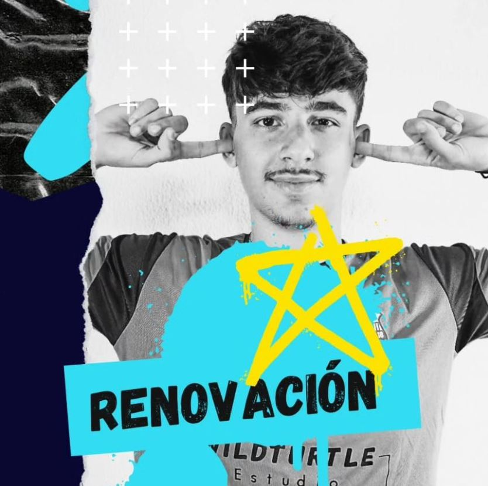
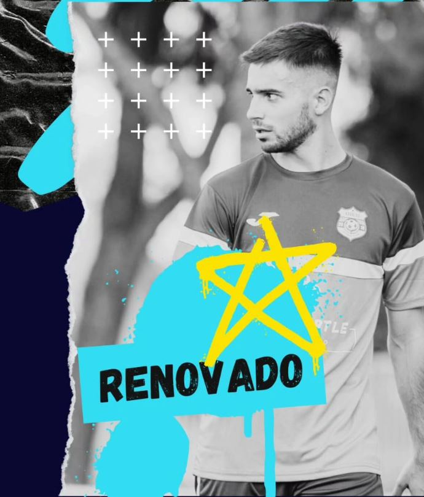

JUGADORES OFICIALES DEL XAVALES FC
PORTEROS
11. Manu Herrera
22. Martín
CENTRALES

3. Antonio Mellado
5. Miguel "El Tibu"
2. Andrés Griffin
8. Aure
4. Javi "Lobo"
LATERALES

9. Ivan Jiménez
10. Canterano
DELANTEROS
7. Mario
22. Martín
CUERPO TÉCNICO
Don Tomas "EL MAESTRO"
Don Javier "MANO DERECHA DEL MAESTRO"